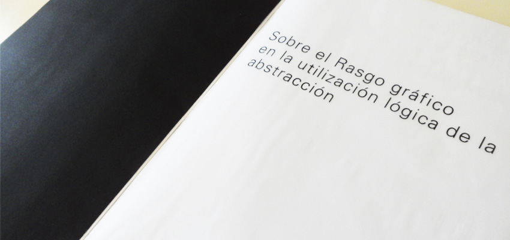
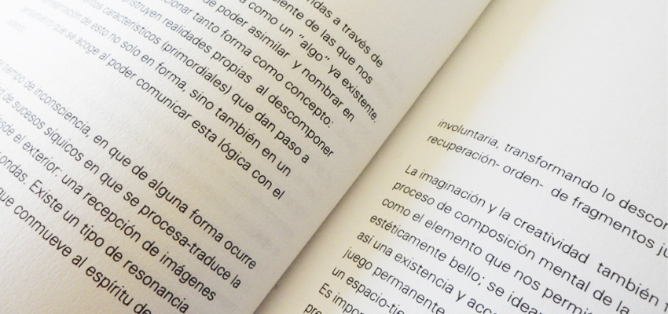
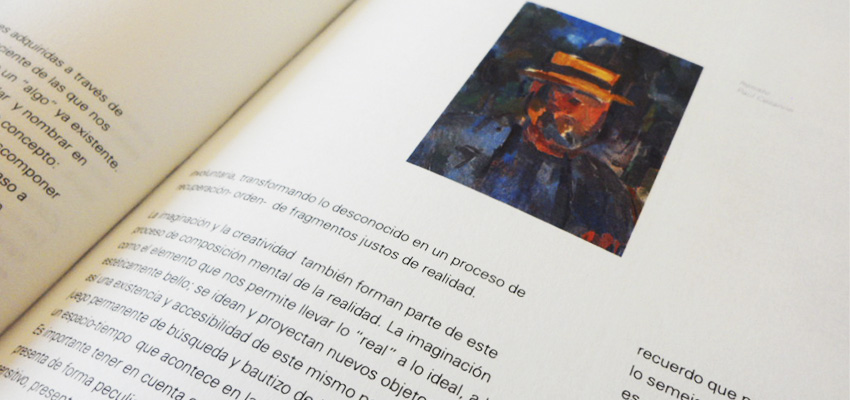
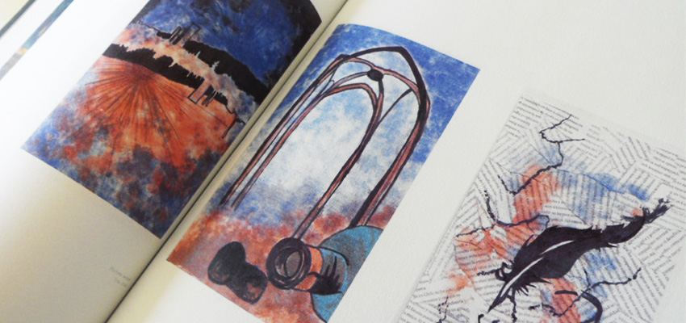

Edición del material adquirido y desarrollado durante el Quinto Taller de formación acádemica.
Sobre la Edición:
Edición en que se reune material de estudio de Taller. Se plantea la Abstracción como el método común desde el cual se aplica el Diseño, implementando la técnica de figura-fondo y la psicología de la Gestal. Se estudia la ingenieria del papel y su infinita capacidad de "hacer aparecer" la forma por medio de la luz y sombra.
Año de Realización:
2015
RASGO GRÁFICO EN LA UTILIZACIÓN LÓGICA DE LA ABSTRACCIÓN




Papel de impresión:
Papel Hilado 9, Papel diamante,Cartulina color negro y Opalina.
Objetivo de Edición:
Edición del material adquirido y desarrollado durante el Sexto Taller de formación acádemica.
Sobre la Edición:
Planteamiento de la abstracción como el acto de abstraer lo que se observa y percibe, un traspaso interpretativo de lo que excluye lo concreto de la realidad. Lo abstracto observa más allá de lo que se distingue como un plano externo, es la búsqueda desde lo especulativo (la reflexión interna, la mirada particular) hacia la invención propia de la mirada (la teoría, lo que se descubre y permite diseñar). El diseño y composición de la forma a través del movimiento natural de la mano, un ritmo propio.
Año de Realización:
2015
IDEOLOGÍA HISTÓRICA DEL MERCADO ESTÉTICO DEL PERFUME
Tipo de Edición:
Infografía
Objetivo de Edición:
Infografía respecto a la investigación del Perfume y su influencia en la evolución de su significado y carácter en la mujer en el transcurso de las épocas de la sociedad.
Sobre la Edición:
Un recorrido por la evolución social de la mujer desde los años 20' a los 90' respecto a su rol y postura frente a la sociedad. Se plantea la evolución del perfume (frasco y aroma) de acuerdo a los perfiles femeninos de cada época y la importancia respecto a como el Perfume refleja por medio del arte y su comercializaicón estética en el mercado, la igualdad de roles y perfiles tanto de la mujer como del hombre ante la sociedad.